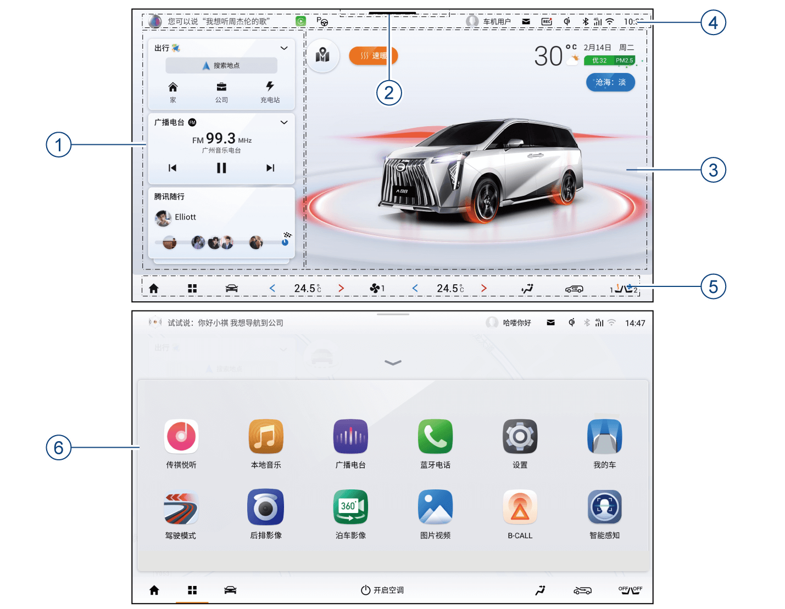
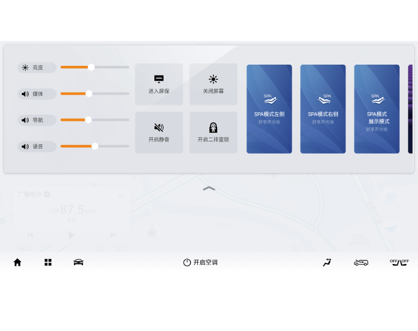
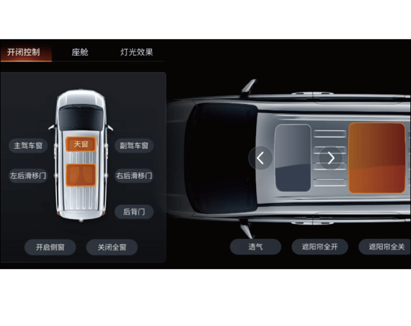
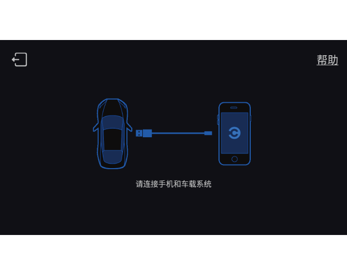

5.7.3 基本操作
AVNT主界面功能区域说明：
① 系统状态栏
–显示“语音、账号快捷入口、消息中心、DVR显示及入口*、无线充电、连接显示及快捷入口、时间显示及格式快速调节入口”等，点击图标进入对应的功能界面。
注释:
DVR*将在后续OTA实现。
② 下拉菜单示意区
–向下拉进入下拉菜单栏控制界面。
③ 智能场景区
–可在场景3D车模和场景巡航地图两种不同场景间进行切换显示。
④ 智能卡片区
–点击卡片快速进入相应功能界面。
–可通过自定义添加其它卡片及排序。
⑤ 底部工具栏
– Home键 ：点击返回主界面。
：点击返回主界面。
– 系统菜单键 ：点击进入应用菜单界面。
：点击进入应用菜单界面。
– 驾控面板键 ：点击进入驾控面板界面。
：点击进入驾控面板界面。
– 座椅模块键
 ：点击进入座椅通风加热控制界面。
：点击进入座椅通风加热控制界面。
–空调信息显示/控制栏区：显示当前空调信息，点击左/右空调区域，进入空调设置界面。
⑥ 应用菜单界面
– 点击桌面底部工具栏的菜单键进入系统详细应用菜单界面。
- 音响系统界面可能因OTA升级而发生变化，请以实车为准
- 高温情况下音响系统可能会触发保护，显示屏亮度变暗，待车辆温度降低后即可恢复，该情况为正常现象。
时间设置
–系统会自动同步刷新GPS的时间，不需要自行设置。
下拉菜单栏
在其它任意界面从屏幕顶部（下拉栏区域）向下滑动调出下拉菜单。可点击 或向上滑动收起下拉菜单栏。处于下拉菜单栏界面，若无操作，一段时间后下拉栏菜单自动收起。
或向上滑动收起下拉菜单栏。处于下拉菜单栏界面，若无操作，一段时间后下拉栏菜单自动收起。
点击下拉菜单栏功能按键可开启/关闭对应功能，或进入对应的功能界面。
我的车
整车电源在“ON”挡位，点击音响系统主界面“智能场景区的3D车模”或应用菜单“我的车”进入我的车功能界面。
可对“开闭控制（天窗、遮阳帘、车窗、后背门、电动滑移门）”、“座舱（座椅调节、后视镜调节、后视镜折叠）”、“灯光效果（灯光秀、氛围灯）”进行调节。
CarLife手机互联*
CarLife手机互联可实现车载系统共享手机端通话、导航、音乐等功能。
–CarLife为百度公司开发手机互联系统，仅支持安卓系统手机4.0以上版本及苹果8.0以上系统手机，支持的手机列表以百度官网最新公布为准，CarLife界面/功能会随着APP版本更新而更新，具体界面/功能请以实际使用的版本为准。
–CarLife手机互联出现异常时，建议插拔恢复，同时建议确认连接线是否良好，如有损坏建议更换新的原装连接线。
–手机系统或操作系统（安卓/IOS）升级后，可能出现CarLife功能无法使用或部分功能无法使用等状况，属于手机系统或操作系统升级后改变了原有的交互协议或超出了CarLife支持的版本而影响CarLife手机互联功能使用。
–由于手机系统版本的兼容性不同，带有手机互联的手机可能无法与车载系统实现正常互联，详情请咨询手机经销商。
–CarLife手机互联功能将在后续OTA实现。
应用获取方式
–如手机未安装CarLife APP，通过浏览器或安卓手机应用商店搜索百度CarLife APP进行下载。通过USB数据线将手机与主机连接后，点击应用菜单界面的“百度CarLife”软按键。
–当显示屏显示如图界面时，点击“帮助”进入连接帮助，可根据您的手机系统选择“安卓手机”、“苹果手机”的连接方法详细说明。
CarPlay车载*
CarPlay车载让你在保持专注驾驶的同时，还能使用导航、拨打电话、收发信息和欣赏音乐。
–使用USB连接线连接手机和主机的USB连接口，连接成功后系统将自动调转到CarPlay主界面，系统界面的“Apple CarPlay”图标高亮。
–在其他功能界面时，可以通过点击应用菜单中的“Apple CarPlay”图标进入CarPlay车载系统。
–CarPlay支持的功能及运用以苹果公司官网公布的为准，根据2019年苹果公司公布的信息，Apple CarPlay功能支持iPhone5以上的苹果手机。
–使用CarPlay时请确保iPhone手机设置→通用→访问限制里的 CarPlay功能是否打开，否则iPhone手机将只能做iPod使用而无法使用Apple CarPlay。
–请使用iPhone原装数据线，否则将可能导致无法连接。
–CarLife手机互联功能将在后续OTA实现。
语音
音响系统开启正常工作后，非免唤醒的语音指令在下达之前需要唤醒语音引擎，可通过以下方式启动语音功能：
–短按方向盘右侧 按键，进入语音模式。
按键，进入语音模式。
–通过说出语音唤醒词：默认唤醒词为“你好，小祺”，另一个唤醒词可自行定义。
自定义方式如下：
1. 通过“你好，小祺”唤醒语音助手，说出“给你取个名叫XXX”，则完成第二个语音唤醒词的设定。
2. 可通过“设置→智能助理→起个昵称”进行唤醒词设置。
在唤醒语音系统听到一声提示音后，才可进行语音控制操作。
语音识别的成功率会受客观环境影响，如环境噪声情况、网络信号情况等，以及用户使用习惯、发音等外界因素的影响，具体使用效果以实车使用环境为准。
语音设置
进入音响系统“设置→智能助理”界面，对语音功能进行设置。
— 页面到底了 —